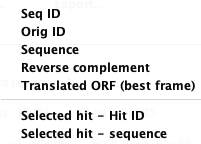
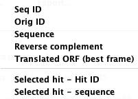
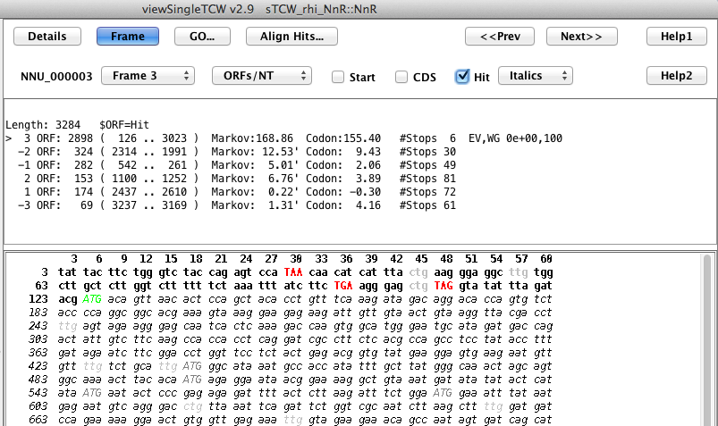
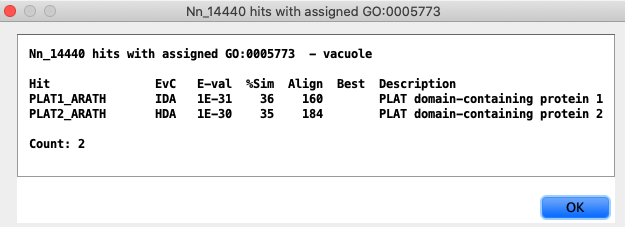
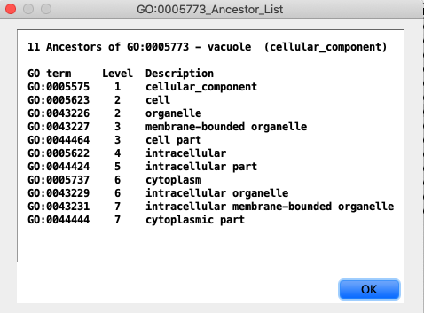

- The
Counts pull-down can change theCounts toTPM orReplicates . - The
All hits can be changed to display onlyBest Hit, Best per AnnoDB, Unique Species, Distinct Regions . - The
Copy... andExport... options are shown on the right.


| Details | Frame | Align | GO |
The Sequence Detail view can be displayed from the Sequence Table by selecting a sequence followed by
Second row of options:
|  |
|
Frame | Go to top |
|
The Start and Stop are highlighted in Green. The location of the best
hit is shown in italics, where it forms a perfect ORF in this example.
The sequence can be shown in alternative frames using the
The TCW selected best frame is the top one listed. The TCW algorithm uses hit information, 5th-order Markov score, and start/stop codons to compute the best frame. |  |
Align Hits... | Go to top |
|
There are options to show:
Dynamic programming is used to compute the alignment. The Hit: numbers are
from the search program ( Selecting a hit followed by |

|
GO... | Go to top |
| The
image on the right shows the union of the GO terms for sequence Nn_14440.
Most of the columns are obvious, except the following two: |

|
| Selecting a GO term followed by |  |
| Selecting a GO term followed by |  |
| Go to top |
{kind=link}
{kind=link}
{kind=link}